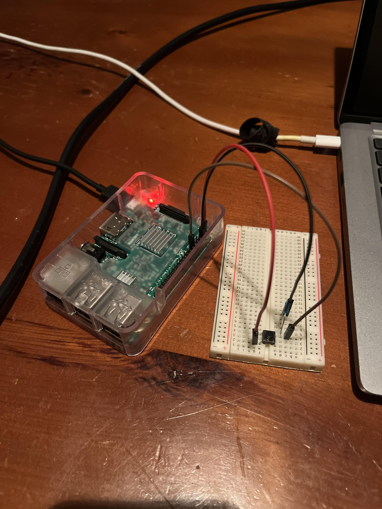
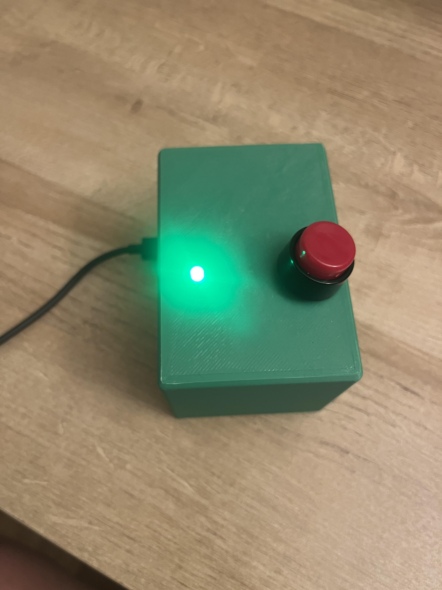

Gram Meds Notification Button
Abstract & Background
My gram has to take daily meds, and my mom would call her every day to check. She used to be good about taking them, but within the last 6 months or so, it's been a bit of a struggle. I thought it would be useful to put my electronics skills to the test and make her a simple device that has a button, so when clicked, my mom gets an email saying that my gram has taken her meds.
Method & Results
I've only ever used Arduinos in the past (college projects, personal tinkering, etc.) but I knew I would need something more sophisticated for this build. I went with a Raspberry Pi 3 because, simply because it's just a full on computer. Also, I had one kicking around.
First, I prototyped the button and email functionality. It's pretty easy to get something working nowadays (I used Claude). Everything worked first try, to my surprise, but honestly, the wiring is pretty simple, as shown in Fig 1. I had to figure out how to setup Gmail App Password authentication, but even that was straightforward.
 
from gpiozero import Button, LED
from signal import pause
import smtplib
import time
import threading
from email.mime.text import MIMEText
GMAIL_ADDRESS = "yourgmail@gmail.com"
GMAIL_APP_PASS = "yoursixteencharpass"
NOTIFY_EMAIL = "yournotifyemail@gmail.com"
COOLDOWN_SECS = 10
LED_PIN = 27
BUTTON_PIN = 17
LED_ON_SECS = 10
last_sent = 0
button = Button(BUTTON_PIN, pull_up=False)
led = LED(LED_PIN)
def flash_led():
led.on()
time.sleep(LED_ON_SECS)
led.off()
def send_email():
msg = MIMEText("Gram pressed the button. This is an automation powered by RaspberryPi.")
msg["Subject"] = "Gram took her meds!"
msg["From"] = GMAIL_ADDRESS
msg["To"] = NOTIFY_EMAIL
try:
with smtplib.SMTP("smtp.gmail.com", 587) as s:
s.starttls()
s.login(GMAIL_ADDRESS, GMAIL_APP_PASS)
s.sendmail(GMAIL_ADDRESS, NOTIFY_EMAIL, msg.as_string())
print("Email sent!")
except Exception as e:
print(f"Email failed: {e}")
def on_press():
global last_sent
now = time.time()
if now - last_sent > COOLDOWN_SECS:
last_sent = now
print("Button pressed - sending email...")
threading.Thread(target=flash_led, daemon=True).start()
send_email()
else:
print("Button pressed - cooldown active, skipping.")
button.when_pressed = on_press
print("Ready. Waiting for button press. Ctrl+C to stop.")
pause()that detects the button is pressed, turns the LED on for 10 seconds, and then sends an email notification through Gmail's SMTP server. There is also this file:
[Unit]
Description=Button Email Notifier
After=network-online.target multi-user.target
Wants=network-online.target
[Service]
Type=simple
User=pi
WorkingDirectory=/home/pi
ExecStartPre=/bin/sleep 10
ExecStart=/usr/bin/python3 /home/pi/button_notify.py
Restart=on-failure
RestartSec=15
[Install]
WantedBy=multi-user.targetWhich is more of a setup notes file, and tells the Rasperry Pi to automatically launch the python script every time it boots, which means the .py file is a set-it-and-forget-it type of deal. Honestly though, if you were to build something similar, it's probably easiest to ask Claude to walk you through it. I've been trying to use Claude for everything since it seems to be the least bad of all the tech companies, but also I'm embracing that AI pesketarian lifestyle. I need to eat some meat, but I try to be off of it when it isn't completely necessary. Not that it matters, because I think the world is too far gone at this point anyway.
Discussion & Learnings
I gave this contraption to my gram and she now uses it every day. It sits right by her pill box. I have 2 favorite parts about this build. First, I like how it directly serves a need. My mom wanted to have more oversight on when my gram was taking her medication, while maintaining a hands off approach, and this tool directly addresses that. Second, I like how it is so simply and user friendly. My gram, who takes several seconds to turn off the tv, has had NO issues simply pressing a big red button! At some point, it could be cool to try to improve the build, so it could be produced at a small scale, for those in need, but for now, I feel good that I have a baseline knowledge in electronics, programming, etc. to make small gadgets like this to improve the lives of those around me.